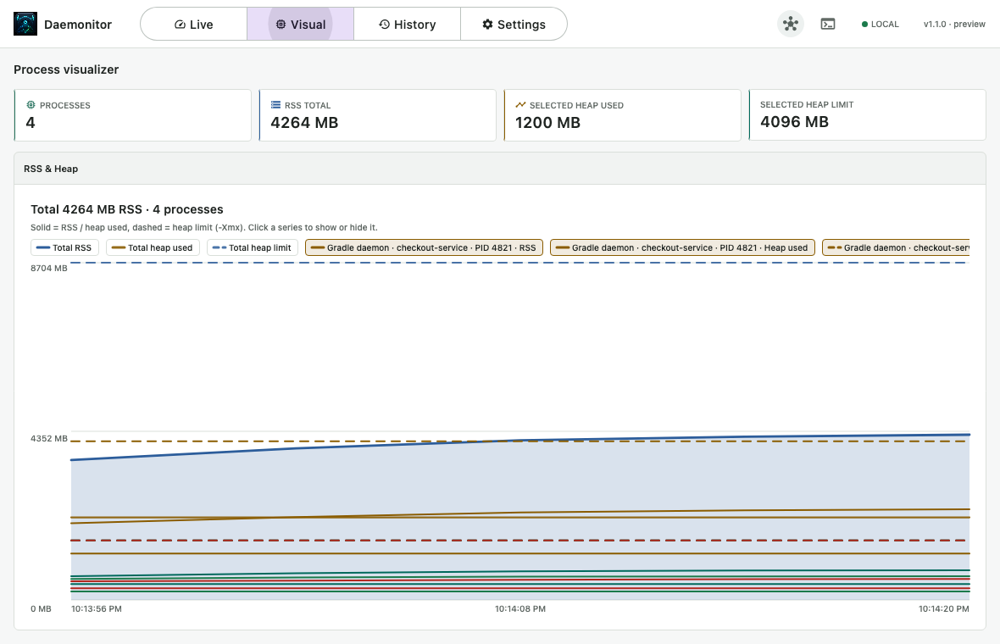
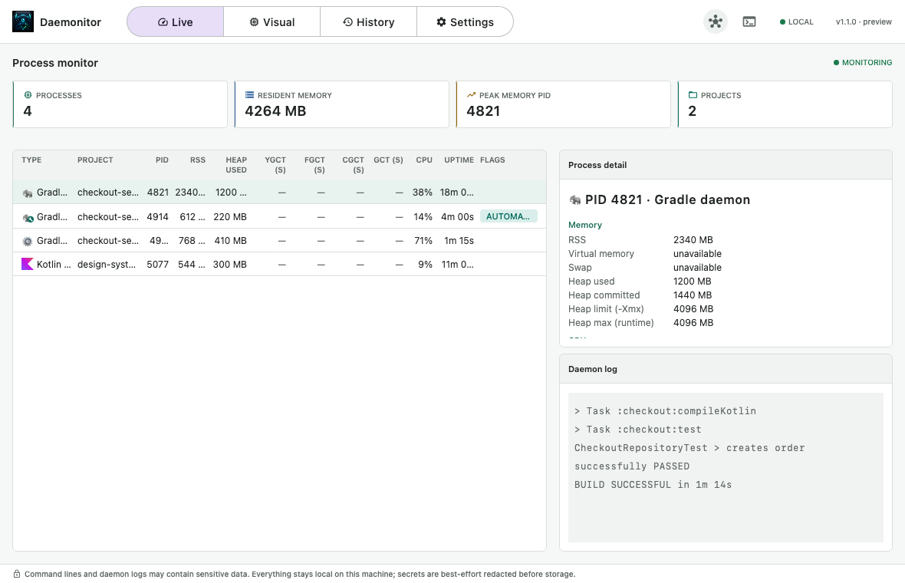
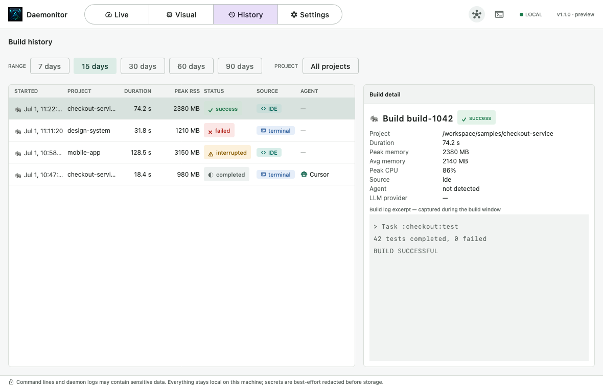
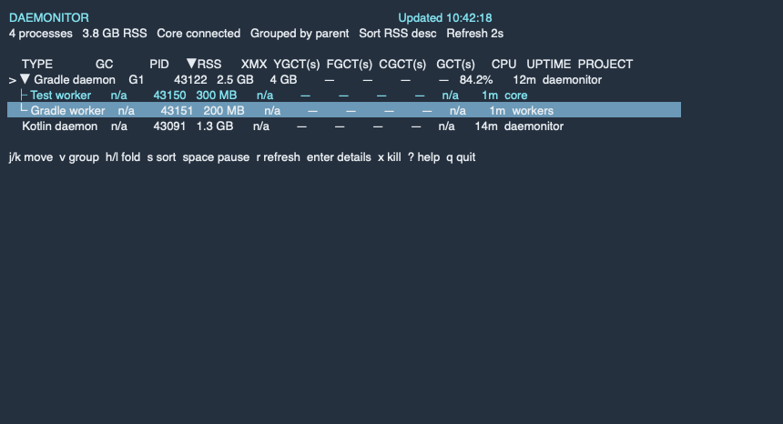

Memory timeline
Rolling RSS charts next to configured heap (-Xmx) so concurrent
Gradle processes are easy to compare.

Activity Monitor for Gradle and Kotlin daemons
Live Monitor lists every Gradle-related JVM — daemons, wrappers, Kotlin daemons, and Gradle workers — with RSS, CPU, uptime, and memory-pressure badges. See what’s building now, what built recently, and whether an IDE, terminal, or coding agent started it.
macOS · Windows · Linux

IDEs, terminals, scripts, and coding agents can all start Gradle at once. Daemons and workers keep using CPU and memory after the visible build window closes. Daemonitor is a local Activity Monitor for those processes — RSS, CPU, uptime, and retained build history — without sending data off the machine.
Rolling RSS charts next to configured heap (-Xmx) so concurrent
Gradle processes are easy to compare.

Recent builds with duration, outcome, peak resources, invocation source, and coding-agent attribution when an agent triggered the build. Searchable local history.

Same local process data, two surfaces: a packaged desktop app, or a native terminal client for SSH and build machines.
Live processes, memory timelines, and retained history in a packaged app for macOS, Windows, and Linux.
Get the desktop app →
Bubble Tea TUI over SSH or on headless machines. Native Go binary; starts
daemonitor-cored when needed. No JDK required.
brew tap cdsap/tap
brew install daemonitor-cli
daemonitor-cliFlag reference: CLI options.

Local-first by design. History and process data stay on your computer.
Optional local, read-only MCP so compatible tools can inspect retained build history and currently visible Gradle processes — without leaving the machine.
Desktop packages for macOS, Windows, and Linux. CLI via Homebrew or the release zip.
daemonitor-cli
Desktop links open the latest GitHub Release. CLI steps are in the CLI section.